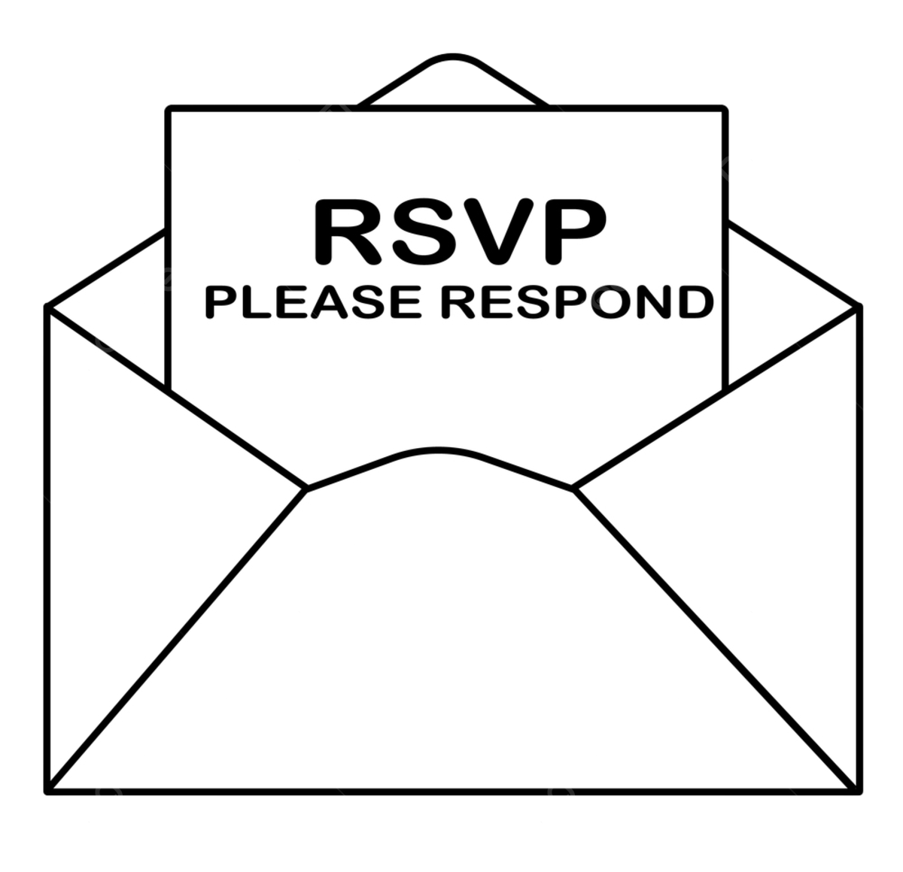

General Information
Here you can find some general information about how to reach the venue and where to stay.
Italo has always been the kind of person to volunteer. It brings him a kind of joy that comes with feeling useful to someone in need. Naturally, in the first few months as an Erasmus exchange student in Delft, he accepted another opportunity to volunteer—this time at a student-led TEDx event at YesDelft, a start-up incubator. He thought it might be a good chance to learn about the start-up environment around the university. After meeting his colleagues—a variety of other exchange students—each was assigned a role. The organizational staff soon realized they were short one volunteer. This being beyond Italo’s concern, he went on to assume his position at the entrance of the venue, with the task of scanning entry tickets. A few moments later, an unfamiliar girl—someone picked out of the student lounge—appeared in front of him. “Hi, I’m Maia, nice to meet you,” she said, shaking his hand firmly. They spoke the night away, scanning tickets and talking about their lives. Maia had never met anyone from Italy before, and Italo had never heard of Curaçao. They realized they were both relatively new to the Netherlands and shared a desire to explore the country. Towards the end of their shift, Italo asked Maia how to spell her name and handed her his phone. Maia, a bit surprised, spelled it out—and while doing so, Italo asked her to also fill in her number. Maia flashed a shy smile and gave him her number. They spent the rest of the evening attending the TEDx talk and discussing the topics among themselves. During cleanup, they worked in pairs, cheerfully pushing each other along a trolley as they moved equipment around. When Maia arrived home, Italo asked if she got home safely. Three days later, they had their first date. So begins Italo and Maia's story together.
Cerimony: chiesa "Santi Protaso e Gervaso", Galliate Lombardo (Varese, Italia)
Reception: "Il Torchio di Villa Bellardi", Galliate Lombardo (Varese, Italia)
Dress code: free, but expect old cobble-stone roads and a grass field!
Short schedule: ceremony at 2:15 pm, reception at 4:00 pm
Full schedule hereHere you can find some general information about how to reach the venue and where to stay.
We are so grateful for your presence on our special day. If you wish to give us a gift, we have set up a registry here.
Alternatively, we would appreciate contributions towards our honeymoon fund.
Please confirm your attendance by clicking on the icon to the right:
